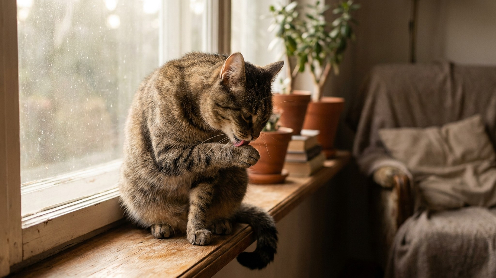

Короткий ответ: большинству домашних кошек купание не нужно — они справляются сами. Длинный ответ — четыре конкретных ситуации, когда мыть необходимо, и чёткие критерии для каждой. Плюс одна большая ошибка, которую делают владельцы из лучших побуждений и которая потом аукается несколько дней.
🐾 Не уверены, что это опасно?
Опишите симптом в AnimaLife — AI-ветеринар за минуту подскажет, что в пределах нормы, а когда пора к врачу.
Кошки — одни из самых чистоплотных животных. Среднестатистическая кошка тратит от 30 до 50% времени бодрствования на уход за собой. Язык кошки устроен особым образом: шипы-папиллы на поверхности языка работают как расчёска — разделяют шерсть, удаляют загрязнения, распределяют кожный жир. Слюна кошки содержит вещества с антибактериальными свойствами.
Регулярное купание разрушает этот баланс: смывает защитный жир с кожи и шерсти, делает шерсть сухой и ломкой, стресс от купания снижает качество жизни животного. Здоровая домашняя кошка — чистая кошка без вашего участия.
Это самый очевидный случай. Кошка влезла в машинное масло, краску, чистящее средство, пластилин, смолу или что-то ещё, что она не должна слизывать при самоуходе. Здесь купание не опционально — это необходимость.
Что важно:
Персы, мейн-куны, норвежские лесные, рэгдоллы и другие длинношёрстные кошки не всегда справляются с самоуходом — особенно в интенсивный период линьки. Шерсть сваливается в колтуны, скапливается жир у корней.
Регулярное купание раз в 4–8 недель помогает:
Частота зависит от конкретной кошки и её активности в уходе за собой. Ориентир: если шерсть выглядит ухоженной и не имеет запаха — купание не нужно. Если есть намёки на сваливание или жирность у корней — пора.
Длинношёрстных кошек желательно приучать к купанию с котёнка — взрослая кошка, которая никогда не купалась, может воспринять ванну очень негативно.
Кошки старше 10–12 лет нередко начинают хуже ухаживать за собой. Причин несколько: суставы стали болезненными, тянуться к определённым зонам больно или сложно, энергии меньше. В результате шерсть на спине ближе к хвосту, на бёдрах и вокруг хвоста выглядит хуже.
Для таких кошек аккуратное купание (или частичное обтирание влажными салфетками для животных) может стать нужным элементом ухода. Частота определяется индивидуально — ориентируйтесь на состояние шерсти.
Важно учитывать, что стресс от купания у пожилой кошки — нагрузка. Если кошка воспринимает ванну очень тяжело, обсудите с ветеринаром альтернативы: сухие шампуни, гигиенические салфетки, грумминг профессионала.
Некоторые дерматологические состояния требуют регулярного применения специального шампуня — это назначает ветеринар. В таком случае купание становится частью протокола ухода, и его частота, техника и продолжительность контакта шампуня с кожей определяет врач.
Самостоятельно выбирать и применять «лечебные» или «медицинские» шампуни не стоит — это поле ветеринарного дерматолога. Обычные шампуни «для здоровья кожи» не имеют доказанного терапевтического эффекта.
Некоторые хозяева купают кошку раз в неделю или даже чаще — из соображений гигиены. Это избыточно для большинства кошек и контрпродуктивно:
Здоровая кошка — чистая кошка. Если она пахнет, это сигнал к ветеринару, а не к ванне.
🐾 Питомец ведёт себя странно?
AnimaLife расшифрует поведение кошки и собаки и подскажет, что делать. Попробуйте бесплатно прямо в мессенджере.
🐾 Понравился разбор?
Подпишитесь на канал — каждый день разбираем по одному тревожному симптому у кошек и собак: что в пределах нормы, а когда пора к врачу. Подпишитесь, чтобы не пропустить разбор, который может спасти здоровье вашего питомца.
Материал носит информационный характер и не заменяет очную консультацию ветеринара.